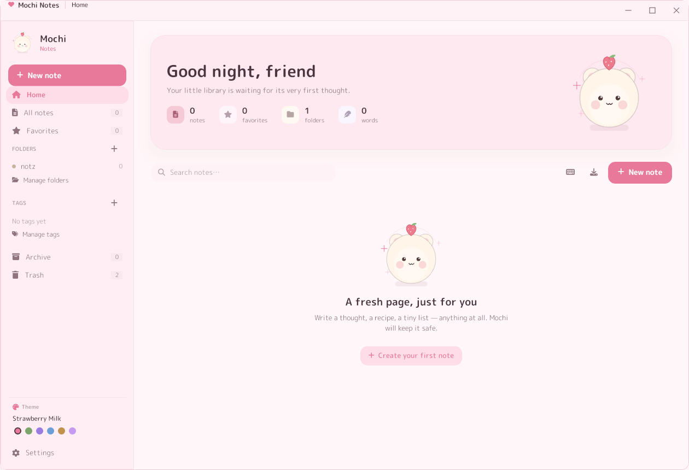

Markdown writing
Headings, lists, quotes, code and checklists — with a live preview when you want it.
A cozy little desk for your notes. Markdown, folders, tags and a mascot that cheers you on — all in one calm, pastel window.

Quietly powerful tools that stay out of your way.
Headings, lists, quotes, code and checklists — with a live preview when you want it.
Everything saves itself a moment after you stop typing. No red dots, no panic.
Give every idea a little home. Drag notes between folders, or layer tags on top.
Find a thought in a heartbeat — across titles, bodies, tags and favorites.
Strawberry Milk to Midnight Mochi. Pick a mood and the whole window follows.
Local backups, one-click Markdown export and a tidy index when you take everything with you.
Each one changes the entire app — not just an accent.
Your notes live in a single SQLite file on your computer. No account, no telemetry, no surprise sync. Backups stay in a folder you can actually see.
Take a look yourself →One executable. Windows 10 and 11. Double-click and start writing.
Download for Windows Portable · no installer · ~22 MBMade with love by Serhat
Built with Rust, Iced and a lot of late-night pixels.